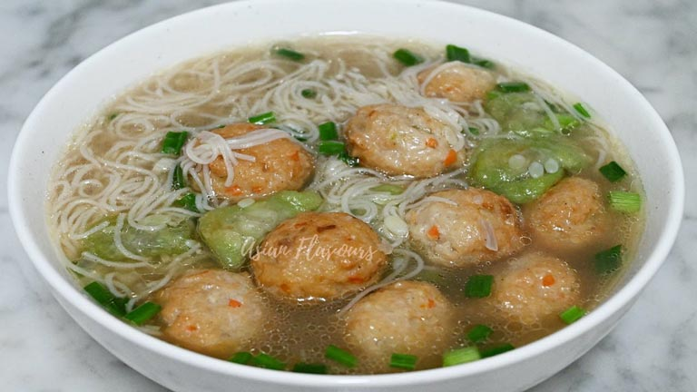

Misua Fishball Soup
Cold weather is approaching, so this dish will keep you warm! This is one of the most recent recipes I learned and it’s very easy and yummy!

Image by: Asian Flavours (Youtube)
Ingredients:
- 1-2 pounds chicken
- Misua noodles (or any long, thin noodle like angel hair)
- 6 cups chicken broth (or 6 chicken bullion cubes with 6 cups of water)
- Frozen fishballs
- 1 white or yellow onion
- 1 tablespoon fish sauce
- 1 tablespoon vegetable oil
- Salt & pepper to taste
- Optional:
- Green onions or scallions
Directions:
- Dice the onion.
- Wash and cut the chicken into strips and lightly season with salt and pepper.
- In a medium-large pan, add in vegetable oil over medium-high heat.
- Cook for about 6 minutes then remove from the pan, placing chicken in a bowl.
- In the same pan, cook the onion until soft.
- In a large pot boil chicken broth (or 6 cups of water and 6 bullion cubes) on medium-low heat
- Add in fishballs and onion.
- Mix in fish sauce. You can add more to taste, but be careful -- fish sauce is extremely strong!
- Add in chicken.
- Add the noodles
- Cover the pot and let it cook for about 2-3 minutes or until the noodles are soft (misua is very thin so it cooks very fast!)
- Pour in a bowl and garnish with chopped green onion.
- Enjoy!
Table of Contents
Recipes